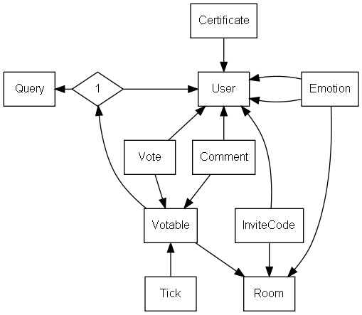
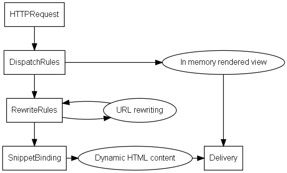

Liquidizer Source
Table of Contents
1 Installation
Installing and running the Liquidizer is very easy. First you must make sure, that the prerequisits are installed: Git, Maven, Gnuplot, and Graphviz. On Ubuntu you can install them with the following command:
sudo apt-get install git-core maven2 gnuplot graphviz
Then you can download the code from its git repository and run it with the provided maven script:
git clone git://github.com/liquidizer/liquidizer.git cd liquidizer mvn jetty:run
After that a new Liquidizer instance will be accessible locally on http://localhost:8080.
2 Source code overview
The Liquidizer source code is concise, well documented, and easy to maintain. Still, it is written in Scala programming language and makes heavy use of complicated functional and object oriented programming styles.
2.1 Data model
All Liquidizer functions operate on classes that are defined by the data model in src/main/scala/org/liquidizer/model. The data structures are persisted in SQL tables through the Liftweb mapping framework. No bespoke SQL queries are used.
The entities of the data model are summarized below. Central classes are User and Votable. They define who casts a vote on what, as this is what the Liquidizer system is centered around:
- User represents a user of the system with nick name, password, and profile settings.
- Query is a suggestion or a question that can be voted on.
- Room refers to a discussion room, where different queries can be discussed and voted for seperately.
- Votable can either point to a query or to a user. In case of a user, it is a delegated vote. Each votable is tied to one room. If items are votable in many rooms multiple votable instances are created.
- Vote represents a weighted vote cast by one user on a votable.
- Comment represents a text comment placed by a user about a votable.
- Tick contains a poll result of a votable at one point in time. Historic as well as current results are stored as ticks.
- Emotion maps the relation between two users within one room. The emotion data is used to compute the displayed emoticons.
- Certificate enables secure password free logins.
- InviteCode might be neccessary for users to participate in restricted rooms.

Class diagram: Boxes are classes and/or database tables. Arrows are n-to-1 relations.
2.2 The rendering pipeline
The Liquidizer is a web application. All actions are triggered through HTTP page requests and are handled by the Liftweb rendering pipeline. This pipeline is defined by a number of rules in the Boot class (src/main/scala/bootstrap/liftweb/boot/Boot.scala).
Starting with an HTTPRequest, the pipeline consists of the following steps:
- DispatchRules These rules point to in memory rendered requests. All dynamic SVG images are rendered in memory. Those requests are handled by appropriate classes in src/main/scala/org/liquidizer/view.
- RewriteRules Some URLs contain dynamic request parameters and do not directly point to a local HTML file. For those requests the parameters are extracted and are then redirected to HTML snippets in src/main/webapp.
- SnippetBinding After all rewrite rules are applied the resulting page is loaded. The page may contain snippets of the kind <lift:XXXX ….>. In this case the snippet tag is treated dynamically by an appropriate class in src/main/scala/org/liquidizer/snippet.
- Delivery Finally the result page is delivered. Obviously, non-html requests such as images or style sheets proceed to this step directly.

Rendering pipeline: Boxes correspond to functionality provided by the Liftweb framework. Circles are specific Liquidizer functions.
2.3 Snippet binding
All web pages that are served by the Liquidizer are eventually derived from an HTML template in src/main/webapp or its subfolders. Those templates follow a well defined structure:
<lift:surround with="BASE_TEMPLATE">
<lift:bind-at name="PLACE_HOLDER">
...
<lift:CLASS_NAME[.METHOD_NAME]>
...
</lift:CLASS_NAME[.METHOD_NAME]>
...
</lift:bind-at>
...
</lift:surround>
The template is then processed with the specified parameters:
- BASE_TEMPLATE: refers to base file that contains the html header and the basic structure of the resulting html page.
- PLACE_HOLDER: the content below the bind-at tag will be inserted into the base template. The position of the insertion is defined by a corresponding tag <lift:bind name="PLACE_HOLDER"> in the base template file.
- CLASS_NAME: refers to a class of the Liquidizer system. All snippet classes are defined in src/main/scala/org/liquidizer/snippet.
- METHOD_NAME: is optional. If not provided a method named render is called. The method is called with the sub content of that tag as an argument. The method can can do whatever it wants with that content.
Most snippets in Liquidizer system are concerned with displaying information about one or more Votable objects. Those snippets make use of two central helper classes to render the content. One class is MultipageSnippet which handles filtering, sorting, and splitting results on multiple pages. The other class is the VotingHelper that provides some binding for XML tags with repeated usage in different contexts:
-
<poll:….> Handles common information about a Votable:
- <poll:name> A string representation with a link on a votables main page
- <poll:no> The number of that item in a list of many
- <poll:result> The polling result
-
<me:….> Handles requests that involve the current user:
- <me:weight> Current user's voting weight for the displayed votable
- <me:vote> Voting controls
- <me:editButton> A button that switches into the edit mode of a previously displayed content.
-
<user:…> Extracts information of votables that point to users.
- <user:profile> A self introduction of that user
- <user:popularity> The users popularity
- <user:emoticon> An emoticon representing the user's relation
- <user:itsme> The displayed user is the current user
- <user:notme> The displayed user is not the current user
-
<data:…> Loads additional referenced votables and processes them recursively
- <data:supporters> All voters of the displayed votable
- <data:delegates> votes cast on other users (users only)
- <data:votes> votes cast on queries (users only)
2.4 Library classes
Some common functionality is provided by the library classes in src/main/org/liquidizer/lib.
- PollingBooth handles all vote casting and commenting.
- VoteMap provides quick access to current polling results.
- TagUtil computes and caches category tags and their frequencies.
Most other classes in the lib directory are concerned with solving the vote equations.
3 Links
- http://github.com/liquidizer The Liquidizer source code
- http://liftweb.org Liftweb framework
- http://scala-lang.org Scala programming language
- http://www.graphviz.org Graph layout engine
- http://www.gnuplot.info Graph plotting engine
Date: 2011-04-07 16:23:23
HTML generated by org-mode 6.31trans in emacs 23